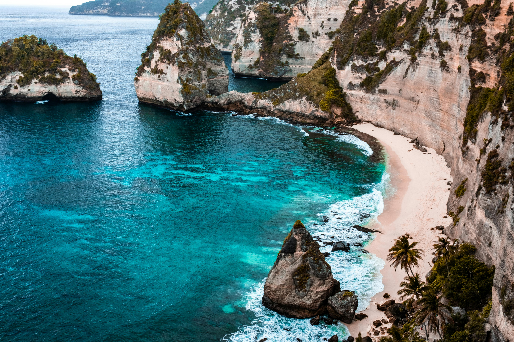

Keindahan Indonesia
Indonesia, dengan lebih dari 17.000 pulau, menawarkan keindahan alam yang luar biasa, mulai dari pantai-pantai pasir putih hingga gunung-gunung berapi yang megah. Destinasi seperti Bali, Lombok, dan Pulau Gili terkenal dengan pantai-pantainya yang memukau, sementara Gunung Bromo dan Gunung Rinjani menawarkan pemandangan gunung yang spektakuler. Keanekaragaman hayati, warisan budaya yang kaya, dan kehidupan bawah laut yang menakjubkan membuat Indonesia menjadi surga bagi para turis.
Temukan Sorotan Wisata

Candi Besakih
Candi Besakih merupakan tempat yang wajib dikunjungi bagi wisatawan yang ingin merasakan budaya dan spiritualitas Bali yang otentik. Kemegahan arsitekturnya, panorama Gunung Agung yang indah, dan atmosfer religius yang kental menjadikan Candi Besakih sebagai salah satu destinasi wisata paling ikonik di Bali.

Gunung Rinjani
Gunung Rinjani, terletak di Lombok, Nusa Tenggara Barat, merupakan gunung berapi kedua tertinggi di Indonesia dengan ketinggian 3.726 meter di atas permukaan laut (mdpl). Gunung ini terkenal dengan keindahan alamnya yang luar biasa, menjadikannya salah satu destinasi pendakian favorit di Indonesia.

Bedugul
Bedugul adalah sebuah kawasan wisata pegunungan yang terletak di Kabupaten Tabanan, Bali, Indonesia. Dikenal dengan udaranya yang sejuk dan panorama alam yang indah, Bedugul menjadi destinasi wisata favorit bagi wisatawan yang ingin melarikan diri dari hiruk pikuk perkotaan.
Ayo Memulai Perjalananmu Hari Ini!
Siap untuk berlibur ke Indonesia? Tentukan Perjalanamu Secepatnya!